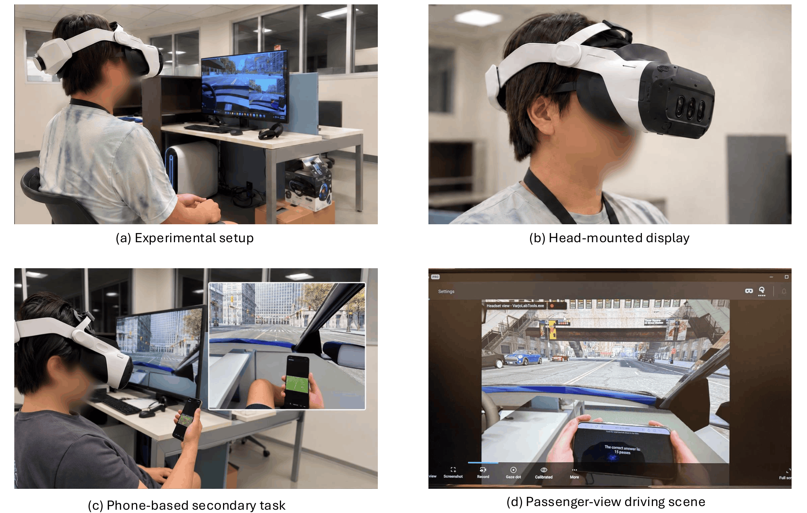
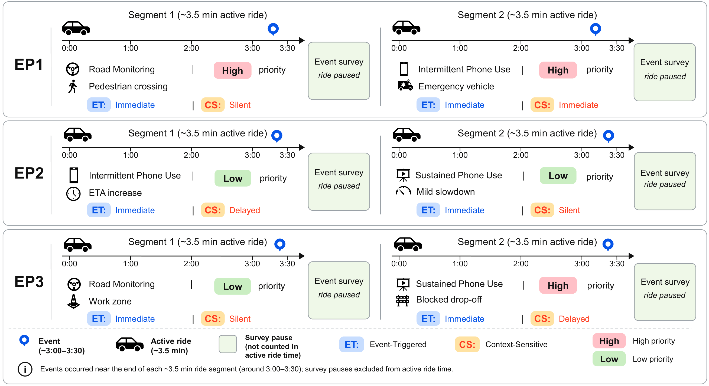
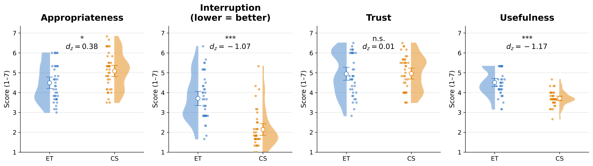
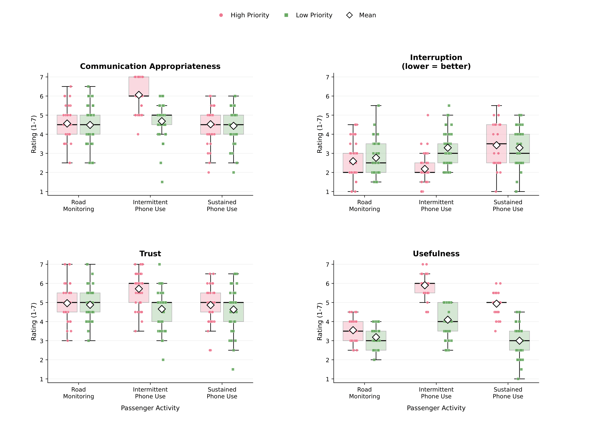

When2Talk: When Should a Proactive In-Car Agent Talk?
Abstract
Proactive in-cabin agents can help passengers understand automated-vehicle (AV) behavior, but communicating every ride event may introduce unnecessary interruptions. We investigated how communication should adapt to event priority and passenger activity. In a mixed-methods within-subject study, 41 participants rode as passenger in a VR simulated fully-automated vehicle. We compared an event-triggered (ET) policy that communicated immediately at every event with a context-sensitive (CS) policy that selected Immediate, Delayed, or Silent communications. CS increased communication appropriateness and substantially reduced perceived interruption. Perceived trust did not differ between policies, although baseline dispositional trust differentiated communication preferences. Findings highlight event consequence, passenger activity, continuing information value, and confirmation need as key considerations for selective in-cabin communication.
Experimental Setup
Participants experienced scripted CARLA ride events from the front passenger seat through a Varjo XR-4 HMD. A synchronized smartphone application controlled the assigned passenger activity and collected event-level responses.

Experimental apparatus. The CARLA/VR environment, HMD, phone-based secondary task, and passenger-seat driving view used in the study.
Study Episodes
Each policy block contained three ride episodes with two scripted events per episode. The episodes covered Road Monitoring, Intermittent Phone Use, and Sustained Phone Use across High- and Low-Priority events.

Episode and communication design. ET communicated immediately at every event. CS used the prespecified Immediate, Delayed, or Silent action for each event context; delayed communication was delivered at a later opportunity in the corresponding activity.
Results
Results are shown at the policy level and across Event Priority and Passenger Activity. The figures preserve the paper's participant-level distributions rather than reducing the study to benchmark-style headline scores.

Overall policy comparison. Event-level evaluations of ET and CS across communication appropriateness, perceived interruption, trust, and usefulness.

Priority and activity patterns. Event-level outcomes across High- and Low-Priority contexts and the three Passenger Activities, averaged across Communication Policy.
Key Findings
The study points to selective communication as a question of timing, information value, and passenger context rather than simply whether more speech is better.
Context-sensitive communication generally reduced interruption
CS reduced perceived interruption in the contexts where it delayed or withheld speech, while preserving trust at the overall policy level.
Delayed and Silent communication produced different trade-offs
Deferral could preserve useful information while moving it to a better moment. Silence reduced narration, but it also removed explicit information and acknowledgment.
Passenger activity changed what communication added
Road Monitoring gave passengers direct access to roadway cues, whereas phone-use activities changed both receptivity to speech and the information available from the scene.
Confirmation needs varied across passengers
Some participants treated observable vehicle behavior as sufficient, while others valued concise acknowledgment that the vehicle had detected and interpreted the event.
Design Implications
The paper identifies four considerations for selecting among Immediate, Delayed, and Silent communication: event consequence, passenger activity, continuing information value, and confirmation need.
Assess whether immediate speech adds value
Passenger attention should inform the communication decision, but it should not by itself determine whether speech is suppressed. Event consequence and information already available from the ride also matter.
Treat delay as a distinct scheduling action
When information remains useful after event onset, the agent can retain it, identify a more suitable delivery opportunity, and reassess whether it is still relevant before speaking.
Do not treat silence as simply “less communication”
Silence is most appropriate when speech adds limited value beyond the event, the vehicle response, and the passenger's existing understanding.
Separate acknowledgment from explanation detail
A brief acknowledgment can confirm that the vehicle recognized a consequential event without requiring a full explanation at that moment; additional detail can be delayed or omitted.
Citation
Please use the following BibTeX entry. Replace the arXiv placeholders after the paper is posted.
@misc{hamid2026when2talk,
title = {When2Talk: When Should a Proactive In-Car Agent Talk?},
author = {Hamid, Kaiser and Li, Peihang and Liang, Nade},
year = {2026},
note = {arXiv preprint},
url = {}
}